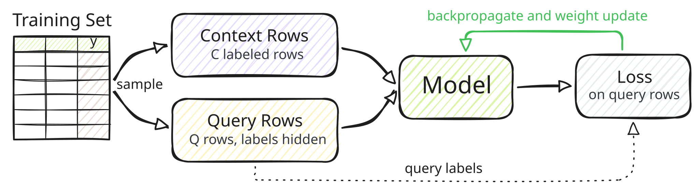
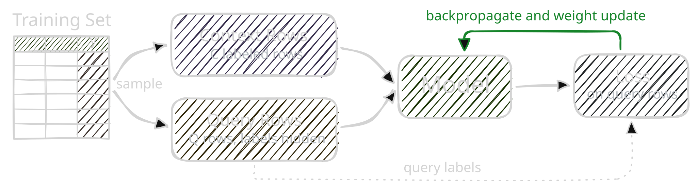

Fine-Tuning#
Pretrained foundation models for structured data solve novel tasks through in-context learning: they read labeled rows and predict for unseen rows without updating their model weights. These models can also adapt to your dataset through fine-tuning, which updates pretrained weights using gradient descent. The fine-tuned model uses the same interface and still requires labeled context rows at inference. Fine-tuning can improve predictive accuracy or achieve comparable performance with fewer context rows, reducing inference cost.
Note
All models in this package support fine-tuning through a differentiable forward pass.
When to Fine-Tune#
Start by evaluating the pretrained model on a held-out validation set. Consider fine-tuning when its accuracy does not meet your needs, or when you want to reduce inference cost by using fewer context rows. Compare the fine-tuned model against this baseline to determine whether it improves accuracy or offers a better accuracy–cost tradeoff.
Fine-tuning can overfit, especially on small datasets. For data that changes over time, use a temporal validation split to assess whether the gains carry over to later observations. Alternatives to fine-tuning include context selection, increasing the number of ensemble estimators, and modifying preprocessing recipes.
How It Works#
The challenge of fine-tuning an ICLModel is that training data serves two roles: labeled context rows provide model input, while separate query rows provide the labels used to compute the loss.
These sets must be strictly disjoint within each training step to prevent target leakage.




Fine-tuning repeats the following steps over sampled mini-batches:
Sample rows from the training split and divide them into disjoint context and query sets.
Run the model on the labeled context rows and the query features.
Compute the loss between the query predictions and their labels.
Backpropagate and update the model weights.
Note
A full example of fine-tuning a tabular foundation model such as TabICLv2 or KumoTabular is provided in examples/tabular/finetune.py, for both classification and regression tasks.
Data Preparation#
Split your dataset into three disjoint sets:
Training rows are sampled into disjoint context and query sets at each training step.
Validation rows are used to tune hyperparameters and select the best checkpoint.
Test rows are reserved for final evaluation.
import sdm
import torch
table = sdm.TableTensor.from_pandas(
df=df,
stypes=sdm.infer_stypes(df),
device="cuda",
)
# Random 60/20/20 split:
table = table[torch.randperm(table.size(0), device="cuda")]
train_table, val_table, test_table = table.tensor_split([
int(0.6 * len(table)),
int(0.8 * len(table)),
])
Model Preparation#
As in a standard PyTorch training workflow, initialize the pretrained model and an optimizer to update its parameters.
Note that every ICLModel ships a default Recipe whose output pipeline is built for inference: it combines the outputs of the ensemble members and, e.g., turns classification logits into probabilities.
In order to compute the loss directly on model outputs, replace it with Identity:
import sdm.processing as sp
task = "classification" # ... or "regression".
model = sdm.models.KumoTabular(task, device="cuda")
optimizer = torch.optim.AdamW(model.parameters(), lr=1e-5)
recipe = model.default_recipe()
recipe.output = sp.Identity() # No post-processing.
The feature and target pipelines stay unchanged: they turn raw columns into the inputs that the pretrained model expects.
Some processors are random.
For example, ShuffleColumns reorders feature columns, and ShuffleCategories relabels classes.
Keep these processors to use their transformations as data augmentation during fine-tuning, or remove them if those invariances are not desired for your task.
For regression tasks with KumoTabular, additionally remove the random FlipSign from the target pipeline.
The default recipe inverts the sign flip via SortQuantiles, but the Identity output will not:
recipe.target = sp.StypeDispatch( # Default target pipeline without FlipSign.
categorical=[
sp.AlignCategories(sort_by="value"),
sp.ShuffleCategories(method="shift"),
],
numerical=sp.Standardize(),
)
Training#
An ICLModel automatically enables gradient tracking in train() mode.
Fine-tuning then follows a standard PyTorch training loop: each step runs a single estimator on newly sampled context and query rows, computes the loss, and updates the model weights:
import torch.nn.functional as F
context_size = 256
query_size = 128
model.train()
for step in range(30):
perm = torch.randperm(train_table.size(0), device="cuda")
context = train_table[perm[:context_size]]
query = train_table[perm[context_size:context_size + query_size]]
out = model(
x_context=context.drop_columns("target"),
y_context=context["target"],
x_query=query.drop_columns("target"),
num_estimators=1,
recipe=recipe,
)[0]
logits, y = sdm.evaluation.to_class_indices(out, query["target"])
loss = F.cross_entropy(logits, y)
optimizer.zero_grad()
loss.backward()
optimizer.step()
The identity output keeps a leading estimator dimension, so [0] selects the single estimator.
For classification, the output has one logit column per class in the sampled context, which sdm.evaluation.to_class_indices() aligns with the query targets.
Ensure that every class represented in the query also appears in the context.
Otherwise, the model cannot predict those query labels.
For regression tasks, KumoTabular predicts 999 quantiles.
Use the pinball loss to train it:
diff = query["target"].numerical - out.numerical # [Q, 999]
level = torch.linspace(0.001, 0.999, 999, device="cuda")
loss = torch.maximum(level * diff, (level - 1) * diff).mean()
Choosing Hyperparameters#
Use a held-out validation set to tune hyperparameters and select the best checkpoint. Evaluate the pretrained model first to establish a baseline, then evaluate after a fixed number of steps using a deterministic inference setting.
Learning rate: Start with a learning rate between
1e-6and1e-5, which worked best in our experiments. This is conservative and preserves pretrained knowledge. If the training loss spikes or diverges, reduce the learning rate.Context size: Use as many context rows as GPU memory allows. A larger context size worked best in our experiments and more closely matches the context size used at inference.
Query size: Choose it based on validation performance and available GPU memory.
Training duration: Monitor validation loss closely and frequently to detect overfitting, and stop if validation performance degrades. More training might not always improve generalization. Keep the checkpoint with the best validation performance, including the pretrained model as a candidate.
These settings are starting points. The best configuration depends on the model and dataset. Reserve the test set for evaluating the final selected configuration.